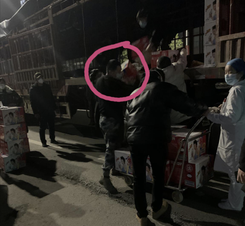
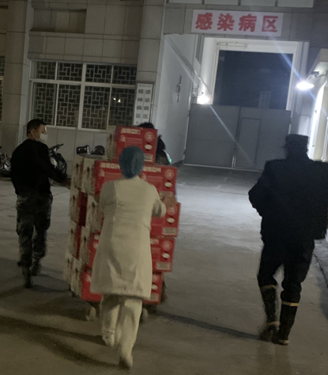

医护人员用文件袋自制护目镜——湖北县镇乡村防疫战
原文链接 备份链接 医疗防护资源不足是常态，各地资源调配需平衡，“灯下黑”区域渐次光亮，但少数地区的疫情宣传依旧不到位 外地务工返乡者最担忧的问题是年后经济收入断流、地域歧视，担心节后可能无法返工 本文首发于南方人物周刊 文 | 本刊记 …
特写|13小时狂奔1011公里 32.5吨疫情防控物资驰援湖北全纪实
2020-01-28 19:14 作者：张家振 来源：中国经营网
本报记者 张家振 武汉摄影报道
“疫情防控物资全部安全送达，可以松一口气了。”1月26日深夜23:13，黎永清在湖北宜昌市宜都市一医院门诊部发出了这样的感慨：加油中国，加油湖北，我们在一起。

84消毒液运到宜都市一医院后，黎永清在帮忙卸货、搬运。
1月26日深夜，黎永清在接受《中国经营报》记者采访时，他刚帮医院卸完所需的疫情防控物资。黎永清运输的这批物资是宜昌全市药店及下辖宜都市一医院急需的84消毒液，共有1600箱、32.5吨。
从江苏省淮安市金湖县的生产厂家到最后一站湖北省宜昌市宜都市一医院共1011公里，黎永清一路狂奔了13个小时。
疫情防控物资整整待发。
黎永清是广西百色人，在武汉已生活了8年，同时也是一名湖北九宫山徐根雕第四代传人，平常在武汉经营根雕生意。
1月25日，黎永清在金湖县生产厂家将疫情防控物资装好出发时，已经是深夜11:30左右，第二天13:00多顺利到达宜昌，沿途将货物送往宜昌三峡物流园、宜昌花艳粮油储备公司，到达宜都市一医院感染病区已是夜里。

湖北宜昌急需的84消毒液整装待发。
“84消毒液和部分口罩等疫情防控物资一共有32.5吨，一共1600箱，单装车就花了接近15个小时，从早晨8点一直装到了晚上11点多。”黎永清告诉记者，除200箱送往宜都市一医院外，其他的84消毒液都将快速运往宜昌全市的各地药店，用于居民消毒防护。


84消毒液等防护物资运往宜都市一医院感染病区病房。
回忆这次运输经历，黎永清表示，1月23日的时候其正在江苏省苏州市吴中区运送红木家具，原本计划运完赶回去和家人团聚过年。当天看到江苏省淮安市金湖县的一家企业发出向湖北运输消毒液的求救信息，因为当时武汉已经“封城”再加上马上过年一直没有人回应，我和厂家取得联系后“放空车”在除夕夜连夜赶到了金湖县。
“我虽然不是土生土长的湖北人，但湖北是我的第二故乡，为了控制疫情，我愿意贡献出自己的绵薄之力。”黎永清告诉记者，湖北有难，物资紧急，我只能拼命往回赶，到宜昌之前在路上就喝了一点水。

宜都市一医院感染病区病房负责人接收疫情防控物资。
据黎永清介绍，从江苏淮安前往湖北宜昌的13个小时里，路上已经很少见到过往的车辆，很多地方已经封路，但交警看到是疫情防控物资基本上一路绿灯，关卡全部打开放行。
“从安徽省六安市金寨县进入湖北省麻城市境内出现暴雪天气，路上一辆车都没有，加油站工作人员看到运的是防疫物资还特地送了我4瓶雨刮水、2瓶矿泉水和一些面包。”黎永清告诉记者，加油站工作人员还让我在深夜的雪天开车一定注意安全，这让我很感动。
1月27日，在完成32.5吨84消毒水的防疫物资运输任务并短暂休整后，黎永清又踏上了向湖北省黄冈市红安县运送疫情防控物资的行程。黄冈市也是湖北省除武汉市外疫情最严重的地区，大别山区多个县市防疫物资匮乏的问题较为突出。

宜昌市夷陵区新冠肺炎防控指挥部颁发的通行证。
“大灾有大爱，有国才有家！”黎永清表示，希望疫情早点结束，早日看到湖北大地春暖花开。
(编辑:曹学平 校对：张国刚)
* 除《中国经营报》署名文章外，其他文章为作者独立观点，不代表中国经营网立场。
* 未经本网授权，任何单位及个人不得转载、摘编或以其它方式使用上述作品，违者将被追究法律责任。
* 凡本网注明“来源：中国经营网” 或“来源：中国经营报-中国经营网”的所有作品，版权均属于中国经营网（本网另有声明的除外）。
* 如因作品内容、版权和其它问题需要同本网联系的，请在30日内进行。
* 有关作品版权事宜请联系：010-88890046 邮箱：banquan@cbnet.com.cn
原文链接 备份链接 医疗防护资源不足是常态，各地资源调配需平衡，“灯下黑”区域渐次光亮，但少数地区的疫情宣传依旧不到位 外地务工返乡者最担忧的问题是年后经济收入断流、地域歧视，担心节后可能无法返工 本文首发于南方人物周刊 文 | 本刊记 …
原文链接 备份链接 Original 南方周末记者 南方周末 南方周末 About Feature 在这里，读懂中国！infzm.com Today *************▲************* 1月27日，一名新型冠状病毒感染 …
原文链接 备份链接 《人物》记者向多位寻求捐赠的医护人员咨询，他们均表示，很多医院的医用外科口罩库存量大概在一个星期左右，「平常有时口罩也戴一天，如果不去视察病房，有的科室没有戴口罩的需求。」用得不多、存量少，脆弱的库存和供应系统很快被疫 …
原文链接 备份链接 作者：张霞 来源：商业人物（ID：biz-leaders） 壹 2020年1月24日，农历的大年三十，我典型的山东大汉老爸生了一场闷气。 这天晚上，他的亲姐姐，也就是我姑姑，携表弟来我家拜年。要面子的爸爸赶忙从抽屉深 …
原文链接 备份链接 你以为他们只会追星？他们从线上到线下的组织力，非常时刻竟很亮眼 粉丝团成员大多是二十岁上下的年轻人，这是他们第一次面临真正的危情时刻 本文首发于南方人物周刊 文 | 本刊记者 张明萌 实习记者 梁翰文 编辑 | 周 …